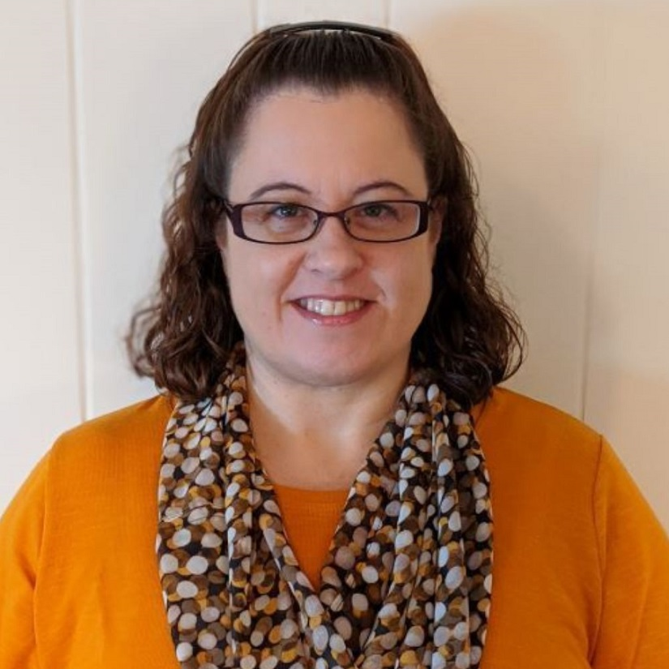

Welcome, I am Michelle Reichenbach
I am currently studying web development and working towards a certificate at Thinkful. I live in Bluffton, Ohio.
I hold an associate's degree in computer networking. I have over 15 years experience in Information Technology. I have worked in the financial, manufacturing, and medical industries.
About Michelle
My first exposure of web development was on a webTV in the 90's. Now I can utilize my creativity using my passion for creating websites. There are so many more options nowadys for building websites. Check out my GitHub profile below to view my work.
My past volunteer experience has been working on teams to build homes for Habitat for Humanity. This is such a rewarding experience to see so many people volunteer and work together to help others. Highly recommended for anyone looking for something meaningful to volunteer for.
When not creating websites, I can be found:
- Enjoying time with Family and Friends
- Working with Essential Oils
- Metal Detecting
Contact
Searching for an amazing website? Look no further, let's get in touch.
Looking forward to letting the creativity flow.